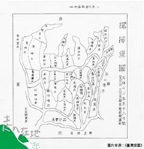
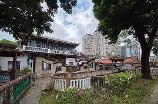
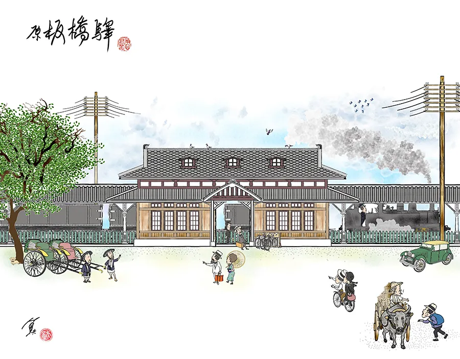
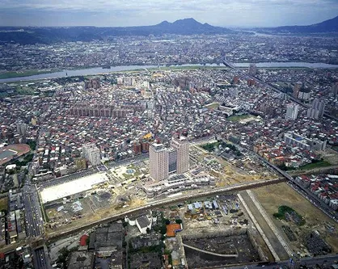

擺接堡歷史地圖與今日行政區位置

擺接堡歷史地圖與今日行政區位置
在「板橋」成為城市名稱之前，這片土地的歷史與「擺接」密切相關。早期文獻記載的擺接社，反映了漢人移民大量開墾以前的原住民族聚落。清代隨著移民、農業開墾與水圳建設，擺接逐漸成為地方聚落及行政區劃使用的名稱。
「擺接堡」中的「堡」是當時的地方行政區劃，不能直接理解為一座城堡，也不等同於今日的板橋區。這個歷史地名所指涉的區域，跨越了今日板橋及周邊地區。
今天仍能在土城的「擺接堡路」看到這個名稱。這條道路保留了舊地名的記憶，也提醒我們：現代行政區的邊界，與早期聚落和地方生活圈並不完全相同。

林家宅邸
板橋早期市街的發展，與林本源家族的移居有密切關係。19 世紀中葉，林家在此興建宅邸、遷居並參與地方建設，使原本以農業為主的聚落，逐漸發展出更完整的街市與商業活動。
當時的湳仔港連結淡水河系，讓板橋得以與艋舺、新莊及大溪等地往來。河運提供貨物運輸與交易的條件，林家與地方居民的建設則使枋橋逐漸成為周邊聚落的商業與信仰中心。今日府中一帶的老街、廟宇與林家花園，都能作為閱讀這段歷史的入口。
板橋林家也出現在臺北城小南門的地方傳說中。小南門又稱「重熙門」，相傳是林家為方便往來板橋與臺北城而捐建。不過，臺北旅遊網明確指出，這個傳說尚未獲證實；它可以作為理解地方記憶的故事，卻不能直接當作確定的建城史實。

日治時期的板橋車站
日治時期，鐵路路線調整為經過板橋，改變了地方對外交通的方式。隨著河運的重要性下降，鐵路承接客貨運輸，也讓板橋成為海山地區的重要交通節點。
鐵路不只方便居民移動，也支援土城、中和等地的煤礦運輸。車站周邊的商業活動與交通機能因而增強，推動板橋從農業與河運聚落，走向以陸路運輸為核心的城鎮。
行政名稱也在這個時期改變：1920 年「枋橋」改稱「板橋」，設板橋莊；1929 年再改為板橋街。今日熟悉的地名，便是在這段時期正式確立。

1990年代開發中的新板特區
戰後，板橋由街改為鎮。1947 年，臺北縣政府設於板橋，行政中心的角色讓地方發展有了新的重心；1972 年，板橋改制為縣轄市。
板橋的成長也與其地理位置有關。它鄰近臺北市，具備鐵路與跨河交通條件，能承接都會區擴張所帶來的居住、就業與商業需求。工廠與工業區的發展吸引人口移入，農地逐漸轉為住宅、道路與產業用地，城市樣貌隨之改變。
若把板橋放進整個臺北都會區來看，中和、永和與三重也同樣參與了戰後的都市化。這些地區都承接人口與產業需求，形成既競爭、又互相連結的生活圈。板橋則憑藉縣治與鐵路節點的角色，逐步累積行政、交通與商業機能。
這裡的「競爭」，可以理解為各地在交通便利性、工作機會、商業服務與居住條件上的比較，而不是一場有明確勝負的城市競賽。

2010年板橋天際線
2010 年 12 月 25 日，臺北縣升格為新北市，板橋市改為板橋區，並延續行政中心的角色。
今日板橋的新都心景觀，其實在升格之前就已開始形成。新板特區都市計畫於 1991 年公告，新板橋車站於 1999 年啟用。鐵路地下化減少了地面鐵道與平交道造成的阻隔，原鐵道路廊改建為縣民大道，為城市空間的重新連結創造條件。
車站、市政府、百貨與住宅的集中發展，使新板特區成為板橋最鮮明的現代城市景觀。行政升格延續並強化了這個中心的地位，但鐵路地下化與新板特區並不是升格後才開始的建設。
新北歡樂耶誕城讓市民廣場與周邊街區成為大型節慶舞臺。燈飾與活動吸引遊客，也讓板橋的城市形象被更多人看見。
但熱鬧背後，居民仍要通勤、採買與回家。當人潮集中在車站與市政府周邊，壅塞、擁擠及交通管制都可能增加日常移動的負擔。官方也曾針對活動高峰規劃分流與改道措施。
對遊客而言，這是一趟節慶行程；對部分在地居民而言，熟悉的回家路可能變得難走。「人潮爆滿後的在地惡夢」，正是從日常生活角度提出的城市觀察：大型活動帶來的觀光效益，也需要與居民的生活品質一起考量。